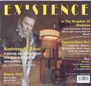

| Artist: | Existence |
| Title: | Small People, Short Story, Little Crime |
| Label: | Black Pearl Productions BP003CD |
| Length(s): | 63 minutes |
| Year(s) of release: | 1999 |
| Month of review: | [03/2001] |
| 1) | The Therapy, Part 1 | 0.53 |
| 2) | Beauty Teen | 5.28 |
| 3) | No Hero | 4.18 |
In the kingdom of madness [5-10]
| 5) | Dripping Cloud | 3.07 |
| 6) | No Sun Can Shine | 5.49 |
| 7) | Darkness | 3.48 |
| 8) | Delirium | 2.13 |
| 10) | Farewell From The Lone Poet | 3.04 |
| 11) | Whispers (the Theme, Part IV) | 2.25 |
| 13) | Flowers Won't Do? | 5.21 |
| 14) | Another Fine Day Of... | 7.29 |
| 15) | Overtime | 4.48 |
| 16) | The Therapy, Part II | 0.02 |
No Hero opens with bouncy rhythm guitars and melodic additions on violin. The song seems again a simple rock song, but especially the drummer shows himself from his most varied side, with the guitarist following slightly behind. The guitar solo does not do that much for me, the hasty violin more so.
The Journey is a sharply played instrumental track with a leading role for the violin. It is followed by the first part of the epic, In The Kingdom Of Madness, on this album called Dripping Cloud. Percussively played, yet melodic piano together with rolling drums and some nice violin, make this a great atmospheric introduction to the song. Great interplay between the various musicians and a strong build-up result adding guitar and bass later on, make for a flashing first part. The second part takes it easier with well dosed piano playing, and afterwards a good emotional guitar solo. The music has a rather sharp ring to it. The violin later on is very melodic, but has a certain dramatic quality to it.
The third part to the track is Darkness, which changes the mood of the song slightly into something darker, menacing. A tense atmosphere for the dramatic lyrics and an emotionally laden rendition. This is one of those singers who as they say in Dutch "has a tear in his voice". Again the violin supports the track in good way. Open Letter To My Friend continues this weird but imposing story in a style which is a mix of Roger Waters and Steve Harley (the latter occured to me more often in the earlier tracks). This part is really sublime, the melody is genius, the lyrics are devastating, especially when read within the context of the story. The last part is wrapped up by the active violin.
Whispers (The Theme, Part IV) is well placed. An easy going instrumental. Business As Usual has a strong Roger Waters feel with the music going back to the first two track of the album: varied, blues rock with violin and guitars.
Flower Won't Do? is from an earlier period and does not open well, I have to admit. The lyrics are trite (until you also read the lines in between in the story), the groove is okay, but the song is too simple at first for people into progressive rock. This becomes better later on when the music again moves into the direction of Roger Waters. Actually, quite a good song.
Flamenco opens Another Fine Day Of... which continues in a waltzlike fashion. The conclusion is again one of rare beauty with tender violin playing and a majestic guitar solo that comes right out of it.
Overtime could have been left off, if you ask me. A funky piece that is simply not very interesting. Again the violin tries to liven things up a bit, but this time does not succeed too well. Too bad about that.
The final track only last two seconds and has only spoken words.
Jurriaan Hage